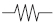

Building Automation
Industrial Automation
Power Automation & Safety


Bangladesh Distributor
Level Switches
|
|
Features |
|
|
|
| Engineering Data |
|
| Explanation of Terms |
|
Types of Water
Water that has been purified for drinking, tap water available in an average household.
Water in septic tanks is treated wastewater and should not be mixed.
Liquid waste that goes into the sewer, such as flushed water from toilets.
Note:Domestic and industrial wastewater contain solids and suspended matter and has a low electrical resistance. Be very careful when installing the electrodes.
Similar meaning to purified water; however, at water treatment plants it may refer to water at a stage before it is purified so it has a broader meaning than purified water.
Sewage (Sewer)
Better described as a wastewater drainage system than a type of water, which eliminates the need for septic tanks, and wastewater tanks can be drained directly into the sewers. In most cases there are pipes that are connected directly to the sewer so that wastewater can be dumped directly into the sewers without wastewater tanks.
Water that flows from spring wells. Similar to rainwater, the electrical resistance is slightly higher.
Water that is pumped to another location. Most tap water is pumped through the water mains.
Water that is stored for a purpose. Most of the time its sensitivity is same as tap water. The use of water as fire-fighting water takes priority.
Ion-exchanged Water
Water that has had its ions removed. The ions are not removed by distillation, and thus electrical resistance is high.
Note:Generally a device with an operate resistance of 200 kΩ is used. The 61F-GP-NH3 can be used in some cases; however, the water resistance can be higher depending on the method used to remove the ions (pure water).
Water that has been distilled by boiling and re-condensing the vapors. Electrical resistance is not as high as pure water.
Note:High-sensitivity models can be used.
Water that circulates in a boiler as steam. It is the condensed water recovered from inside the pipes
Water that is free of impurities.
It may have a resistance anywhere from 200 kΩ·cm up to 18 MΩ·cm, requiring a super high-sensitivity 61F.
Note:Titanium electrodes are used to preserve the purity level of the water.
Cooling water from steam turbines and boilers.
Feed Water
Water that is injected into the boiler to keep the purity level constant.
It has relatively low resistance.
Water Tanks and Ponds
Ground Tank
High-rise buildings and apartments that have elevated storage tanks on the rooftop temporarily store water in a ground tank before pumping it up to the elevated tank. The ground tank is often installed underground or on the ground floor.
Note:In this brochure, the generic term "water supply sources" is used instead of the term "ground tank." Take into consideration the fact that ground tanks often double as fire hydrants when determining the length of electrodes. The water level of the ground tank will be controlled by a different 61F Level Controller or a float valve. (The 61F Level Controller for the elevated tank may be used and its electrodes will be in the ground tank together with the other electrodes.)
The 61F-G4N is used for relatively larger buildings and apartments but due to recent Japanese government regulations that require the lower limit to be displayed, the 61F-GP-N may be added.
Elevated Tank
Water tanks that are installed on rooftops of high-rise buildings and apartments. They use the height of the tank (i.e., gravity) to supply water.
Note:Water is automatically pumped from the ground tank using the 61F-G4N or 61F-G1N. With the recent introduction of pressurized water systems, some buildings do not have elevated water tanks. However, their role as storage tanks in the event of blackouts and disasters is being reconsidered.
Distribution Reservoirs
Water from the main water supply is distributed and temporarily stored in a reservoir for residential housing.
These are used for separate small water supplies.
In cities where there are good sewage systems, the septic tank has been replaced with a temporary storage tank for wastewater from toilets and kitchens.
Note:In normal apartments, the wastewater will be drained directly into the sewer through the wastewater pipes; however, buildings with underground levels must use pumps to draw the wastewater up to the sewers. For this reason, a temporary storage tank for wastewater is required.
These types of tanks contain grease and other solids, so each electrode must be mounted with enough separation to prevent short-circuiting.

Supply Reservoir
The main water supply reservoir for residents created by waterworks.
Water is delivered to this reservoir from various water sources, passed through a purification plant, and supplied to the residents.
Note:Supply reservoirs must be maintained above a certain water level at all times. The 61F Level Controllers are often used for this purpose, and the wiring distance between the relay and the electrodes are also often very long. There are some private as well as public supply reservoirs.
Temporarily stores wastewater from toilets. The wastewater is treated to get rid of any solids before it discharges the fluid elsewhere.
Note:Electrodes used in septic tanks are weak alkaline types, so be careful with the insulation. In cities where the sewage system is well established, septic tanks are no longer necessary in buildings and any wastewater goes directly to the wastewater tank.
Specifications
Two-wire Method (Type R)
The self-holding circuit is removed to reduce the number of lines between the 61F Level Controller and the electrodes.
However, the self-holding electrode is still required, so make sure that all components (Level Controller, relay unit, electrode holder, etc.) are type R with 1 W, 6.8 kΩ resistance.
Reference
| Model | Number of lines between electrodes and the 61F Level Controller | Model | Number of lines between electrodes and the 61F Level Controller |
| 61F-GN/-G | 3 | 61F-GNR/-GR | 2 |
| 61F-G1N/-G1 | 6 *1 4 *2 | 61F-G1NR/-G1R | 4 *1 3 *2 |
| 61F-G2N/-G2 | 4 | 61F-G2NR/-G2R | 3 |
| 61F-G3N/-G3 | 5 | 61F-G3NR/-G3R | 4 |
| 61F-G4N/-G4 | 9 | 61F-G4NR/-G4R | 7 |
*1.Indicates automatic water supply control with pump idling prevention.
*2.Indicates automatic water supply control with abnormal water shortage alarm.
Three-wire Method
Called three-wire as opposed to the two-wire method. It is the standard operation method for 61F Level Controllers.
Operate Resistance
The amount of resistance between the electrodes required for a 61F Level Controller to operate. The resistance of the liquid or solid between the electrodes must be below this value for the Level Controller to operate.
Note:The higher the operate resistance, higher the sensitivity, and liquid with low conductivity can be detected
Inter-electrode resistance
Similar to the operate resistance. The operate resistance includes the resistance of the lead wires for the electrodes. If the lead wires are very long, these values are not exactly the same, but generally they can be regarded as the same.
Conductivity (Siemens: S)
Unit of electrical conductance for liquids. It is commonly expressed in micro-siemens (μS) although it used to be expressed in ohms (Ω). It is the inverse value of electrical resistance, so the smaller it is, the higher the resistance, requiring a Level Controller with higher sensitivity.
1 μS/cm → 1 MΩ·cm
2 μS/cm → 500 kΩ·cm
10 μS/cm → 100 kΩ·cm
Self-holding Circuit
When the relay is triggered, the value is retained by a selfholding circuit.
For the 61F-GN, electrode E2 is the self-holding circuit. A selfholding circuit enables a control range to be set and also prevents the relay from switching rapidly due to ripples on the liquid surface.
Contact Capacity (Output)
Maximum switching capacity of the relay contact.
The amount of resistance between the electrodes required for the 61F Level Controller to reset. The resistance must be higher than this value for the device to reset.
Note:If there is no liquid, the resistance should be infinite; however, if there is liquid residue on self-holding electrode and separators, it won't be infinite immediately.
This value is important for 61F Level Controllers because it affects the leakage current of the wire's float capacitance. The low-sensitivity and long distance Level Controllers are used for this purpose.
The liquid's resistance to current flow expressed in kΩ•cm.
It has an inverse relationship with conductance. (It is different to the operate resistance.)
Electricity flows between the electrodes along infinite routes through the liquid.
Specific resistance is a measure of how difficult it is for current to flow along these paths. Specific resistance varies with the installation conditions of the electrodes and the submersion depth, so the actual operation depends on the distance between the electrodes and the surface area of the fluid (submersion depth). It is difficult to find the resistance between the electrodes, so the Specific resistance is used as a reference value.
Operating Voltage
The power supply voltage required for the 61F Level Controller to operate. For the 61F Level Controllers, it is at least 85% of rated voltage. Therefore the power supply voltage must not fall below 85% of rated voltage.
An estimate of the smallest load for which switching is possible in electronic circuits.
Type of Contacts
Types of contact structure.
Note
Load
Loads can be categorized into the following three types.
(1)Resistive loads
When voltage is applied to appliances such as heaters, it has a constant current flow. These types of loads are called resistive loads.
(2)Inductive loads
Loads that have inductive components such as motors and solenoids.
(3)Reactive loads
Loads that have reactance such as condensers.
Note
Types of AC Load and Inrush Current
| Type of load | Inrush Current/ Rated Current | Waveform | |
| Solenoid | Approx. 60 times | ||
| Incandescent light bulb | Approx. 10 to 15 times | ||
| Motor | Approx. 5 to 10 times | ||
| Relay | Approx. 2 to 3 times | ||
| Resistive load |  | --- | --- |
The instantaneous current flow when the contact is closed or the transitive current is higher than the steady-state current.
Switching Frequency
The number of times a relay switches in one time unit. The time unit is a discrete unit, such as per hour.
Operation
In high-rise buildings and apartments, water is pumped up from ground tanks to elevated tanks. If the ground tanks run out of water and the pump is still operating, the pumps starts pumping air and overheats the motors, potentially causing a burnout. To prevent this from happening, the pumps are stopped once the water drops below a certain level.
The 61F-G1N/-G1 and 61F-G4N/-G4 have this function.
Alternate Operation
In larger applications where water is pumped using a motor, there will be a spare motor. If the spare motor is not used, it may get rusty and deteriorate. If it is used continuously, it will also deteriorate due to generation of heat.
By alternating control of the two motors, the effective life of the motors is extended and when one of them breaks down, it can maintain operation with the other one. (An external switch is required.) The 61F-AN/-APN2 support this function.
The internal relay operates when power is applied to the 61F and resets when current flows between the electrodes.
However, the operation after resetting and the wiring are the same as for models with sequential operation.
The internal relay switches when current flows between electrodes.
Note:All models except high-sensitivity models use this method. The 61F-G[]NH also uses this method.